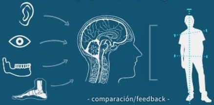

No es noticia (pero no deja de sorprender) como üí´TODO EST√Å CONECTADO CON TODO. üí´
En la vida no podemos apartar por completo el campo de la política con el de la filosofía y a su vez con las artes, por ejemplo. Y en nuestro cuerpo no podemos apartar a los sistemas específicos de cada función sin afectar al resto.
Cuando cantamos también somos un TODO, y de eso se trata esta serie.
Acá la parte 2: Sistema auditivo.
Click acá si querés ver la parte 1: Sistema Nervioso.
—
El sistema auditivo es el conjunto de órganos que hacen posible el sentido del oído. Nuestro sistema auditivo es un gran transformador de energía.
Lo dividimos en externo, medio e interno:
Primero, el oído recibe las ondas sonoras que generan variaciones de presión. Éstas (atravesando el tímpano) son transformadas en energía cinética, luego en hidráulica (hacia la cóclea) y por último en impulsos eléctricos que es el tipo de información que capta el cerebro finalmente. Todo esto en un lapso de tiempo tan pequeño que lo percibimos como en un instante.
Pero el oído, aunque reciba ese nombre, no solo sirve para oír…
También es el mismo oído el encargado de mantener nuestra sensación de equilibrio (a través de mecanismos que se haría un poco largo profundizar). Pero podemos decir que nuestro oído sabe en qué posición está nuestro cráneo respecto a la gravedad, y junto con otros informantes (gráfico de abajo), esta información se transmite a la computadora central, o sea, al SN (específicamente al cerebelo) y el mismo se comunica con nuestro sistema muscular-postural para intervenir y equilibrar lo que haga falta.
Hay una relación muy específica entre nuestro oído y la faringe, tan específica que tiene nombre:
Conecta ambas zonas (oído medio y nasofaringe) y mide hasta 4 cm de largo. Su objetivo es equilibrar las presiones del oído medio para que el tímpano pueda transmitir las ondas sonoras de manera eficaz y para proteger sus estructuras ante posibles cambios bruscos en el ambiente (por ejemplo, el descenso de presión externa al despegar el avión).
El auditivo es un sistema único, muy pequeño y muy refinado. Espero que este pequeño artículo le haya echado un poquito de luz y se te haya hecho interesante.
Gracias por llegar hasta acá! Si te gusta este contenido podés hacer un aporte por Mercado Pago (alias: alza.tu.voz o a través de este link )
Tu apoyo es importante y valioso, gracias!
Podés enviarme un whatsapp, mail o seguirme en redes sociales en los siguientes links: